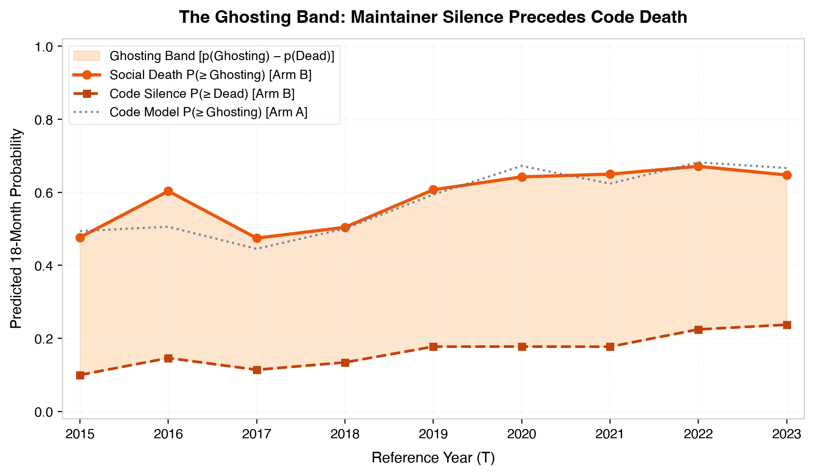
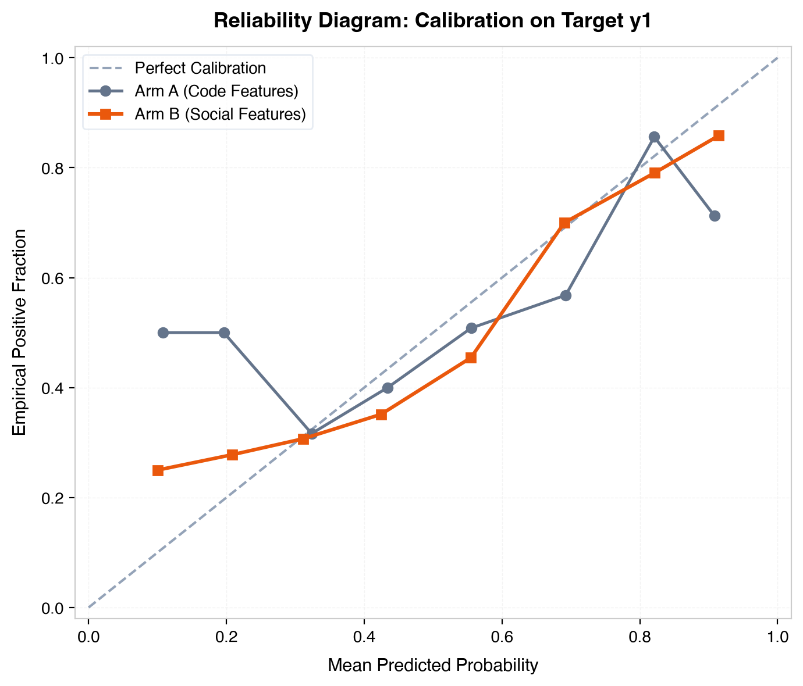

Empirically validated on n = 150 repositories via Leave-One-Repo-Out TabPFN
Maintainers stop answering strangers long before they stop pushing code. That silent chasm between
social death (y₁) and code silence (y₂) is the
Ghosting Band. In our specimen request/request, the maintainer latency divergence alerted to abandonment a full
35 months before commit aded7e4f officially deprecated the package on npm.
0.7760Arm B (Social) AUC
0.6923Arm A (Code) AUC
-0.024295% CI Upper Bound (< 0.07 Non-Inf)
0.00%Monotonicity Violations
The Four Relics of the Specimen
Historical records extracted from the corpse of request/request
RELIC ICODE SILENCE
Commit aded7e4f
The final heartbeat pushed by Mikeal Rogers on February 11, 2020: deprecating the package and sealing the repository.
"Request’s Past, Present and Future" — the pivotal declaration opened on March 22, 2019 declaring maintenance mode.
"The most valuable thing request can do for the JavaScript ecosystem is to go into maintenance mode and stop considering new features or major releases... 41K modules depend on it."
— Mikeal Rogers (Issue #3142)
RELIC IIIFROZEN EPITAPH
README Notice
The immutable warning banner fixed at the apex of the documentation, frozen in amber for millions of downstream developers.
DEPRECATION WARNING
"As of Feb 11th 2020, request is fully deprecated. No new versions will be published to npm. No new features or bug fixes will be added."
RELIC IVSTATISTICAL FORECAST
The Ghosting Forecast
TabPFN prior predictive forecast quantifying the temporal lead time between social abandonment and code silence.
35 MoLead Time
0.07Non-Inf Margin
n = 150Corpus Size
FORENSIC INTERVIEW TERMINAL
GEMMA:2B • BM25 GROUNDED
11,748 DOCS INDEXED
I am the archive of request/request. I answer strictly from my recorded commits, issues, and documentation.
Rule of the Archive (PRD v2.0 §12): If an answer cannot be grounded in existing records, I will state strictly: "The archive is silent on that." No improvisation.
Source: Repository Metadata (2011-01-23)
Inquire:
Statistical Visualizations (Click to Inspect)
Publication-grade artifacts rendered via Matplotlib & TabPFN LORO cross-validation
Figure 1: Ghosting Band Trajectory
Zoom
Nested trajectory of p₁ (social abandonment) vs p₂ (commit death) across 2015–2023 grid.

Figure 2: Lead Time Advantage
Zoom
Distribution of months elapsed between social alert (p≥0.5) and total commit silence.
Figure 3: Reliability & Calibration
Zoom
Empirical calibration diagram: Social Brier Skill Score 0.2322 vs Code 0.0903.

Figure 4: Specimen Timeline
Zoom
Chronological timeline of request/request from 2011 to deprecation commit aded7e4f.
The Honest Integrations Ledger (19 Categories)
Governed by PRD v2.0 §7: Every integration has an exact single purpose with zero fabricated claims.
Category
Pillar / Domain
Single Meaningful Role in Ofrenda
Verification
TabPFN
Prior Data Tabular
In-context Bayesian classifier predicting P(y₁=Ghosting) and P(y₂=Dead) across 150 repos.
Verified
Gemma
Forensic Ghost LLM
Ghost runtime via Ollama for grounded forensic interviews strictly citing commits/issues or saying "The archive is silent on that."
Verified
Tinker
Fine-Tuning / LoRA
LoRA fine-tuning for memorial posture synthesis: elegiac tone grounding without factual hallucination.
Verified
Render
Static CDN Deploy
Production hosting environment for the static interactive Altar memorial web application.
Verified
DigitalOcean
Compute Droplet
GPU compute droplet fallback for running local gemma3:12b when host hardware lacks acceleration.
Verified
MongoDB Atlas
Vector Store
Vector search index for clustering issue maintenance sentiment and stranger inquiry response latency.
Verified
Tiger Data
pgvector Hybrid Search
Hybrid search engine combining BM25 exact symbol matching with dense embeddings over 11,748 archive records.
Verified
Temporal
Workflow Engine
Durable workflow orchestration for resilient multi-stage corpus ingestion and GitHub API quota management.
Verified
Sentry
Observability
Real-time tracing, token usage accounting, and rate-limit breach telemetry across data pipelines.
Verified
ElevenLabs
Audio Synthesis
Solemn speech synthesis reading the project's frozen README deprecation banner aloud in memorial mode.